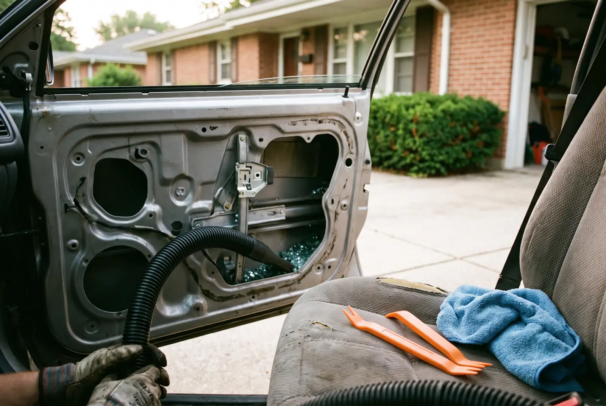

Tempered side and rear glass replaced on site, with the door cavity properly vacuumed out.
Call Now for a Free QuoteTell us the vehicle and the damage — we’ll come back the same working day.
Prefer to talk? Call (256) 699-0625

Door and back glass replacement in Decatur covers everything that is not the windshield — front and rear door windows, quarter glass, vent glass and the rear windshield. These panes are tempered rather than laminated, which changes everything about how they fail and how the job gets done.
The interior trim panel comes off first, along with the vapour barrier behind it. That exposes the window regulator, the door cavity and, on a broken window, several hundred pieces of glass sitting in the bottom of the door.
Those get vacuumed out properly — the cavity, the regulator track, the seat rails and the carpet. This is the step that separates a job done right from one you regret, because glass left in a door rattles at every bump, chews up the regulator over time, and keeps surfacing in the cabin for months.
The new pane is set into the regulator clamps, aligned so it seats squarely in the channel, and the window is run up and down before anything goes back together. Then vapour barrier, trim panel, and a final vacuum of the interior.
Because it is tempered, and that is deliberate. Tempered glass is heat-treated so the outer surfaces are in compression and the core is in tension. That makes it far stronger than ordinary glass, but when something finally penetrates the surface, all that stored tension releases at once and the whole pane crystallises into small blunt cubes.
The design goal is exactly that outcome. Blunt cubes are survivable in a crash; long shards are not. It also means there is no such thing as repairing a chip in a side window — there is nothing to fill, because the pane is either intact or it is gravel.
Windshields are the opposite: two layers of glass laminated around a plastic interlayer, which is why they crack and hold together rather than falling into your lap. Same car, two completely different materials, two completely different repair paths.
| Factor | Effect on the quote |
|---|---|
| Which pane | Front door glass is usually the cheapest; quarter glass and rear windshields cost more |
| Defroster grid | A heated rear windshield costs more than a plain one and has to be connected properly |
| Tint and privacy glass | Factory privacy glass is a different part number from clear |
| Regulator damage | A break can bend the regulator or strip the clamps, which is a separate part |
| Cleanup | A pane that shattered while the window was down puts glass much deeper into the car |
Front door glass is usually the least expensive of the group and rear windshields the most, with the cleanup and any regulator damage accounting for most of the variation.
Door and back glass is tempered, held mechanically in a regulator, and can be driven on immediately — there is no adhesive to cure. The work is mostly disassembly, cleanup and alignment.
A windshield is laminated, bonded structurally with urethane, and needs cure time before the car is safe to drive. It also carries the ADAS camera on most modern vehicles, which is why that job may need a calibration and this one never does.
Practically: a broken side window is more urgent for security and less urgent for safety. A cracked windshield is the reverse. If you have both, we do them in one visit.
Windshield damage as well? See windshield replacement and ADAS calibration.
No. Side and rear windows are tempered glass, which has no laminate layer to inject resin into — the pane is either intact or it has shattered completely. Resin repair only works on a laminated windshield. If a side window is damaged, replacement is the only option.
Yes. There is no adhesive curing, so no safe drive-away time to wait out. The glass is held mechanically by the window regulator, and once the trim panel is back on and the window has been run up and down to check alignment, the car is ready to go.
That is most of the job. We pull the trim panel and vacuum the door cavity, the regulator track, under the seat rails and the carpet. Glass left in a door rattles, wears the regulator and keeps working its way into the cabin, which is why a rushed cleanup shows up months later.
One to two hours for most door glass. A rear windshield with a defroster grid takes longer because the electrical connections have to be handled carefully, and a pane that shattered with the window rolled down adds cleanup time since the glass travelled further into the car.
Most jobs are done in your driveway or the work parking lot. Tell us the vehicle and the damage and we’ll quote it on the spot.